Линк с которого можно скачать MySQL Installer: https://dev.mysql.com/downloads/windows/installer/
(Ссыслка на страницах под названием: "Looking for previous GA versions?" раньше использовалась для выбора предыдущих, стабильно работающих версий. В этот раз её не нажимал)
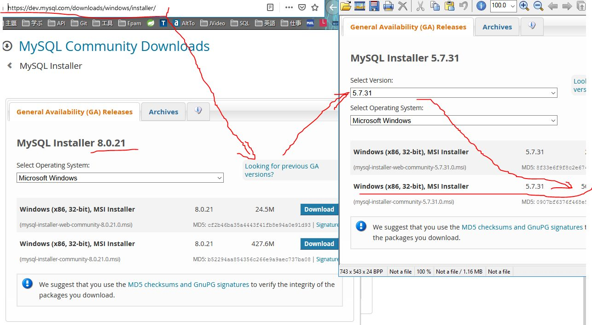
Страница, на которого можно скачать MySQL Connector/J для Java и Windows: http://dev.mysql.com/downloads/connector/j/
(Уже идёт с MySQL Installer, поэтому можно не качать.)
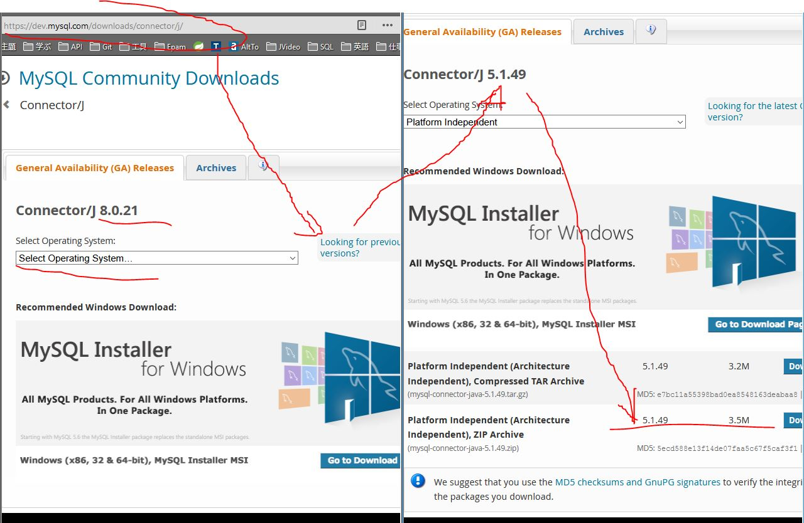
При установке создало папки: c:\Program Files\MySQL\ c:\Program Files (x86)\MySQL\ C:\Users\Kiranatos\AppData\Roaming\Oracle\MySQL Notifier C:\Users\Kiranatos\AppData\Roaming\MySQL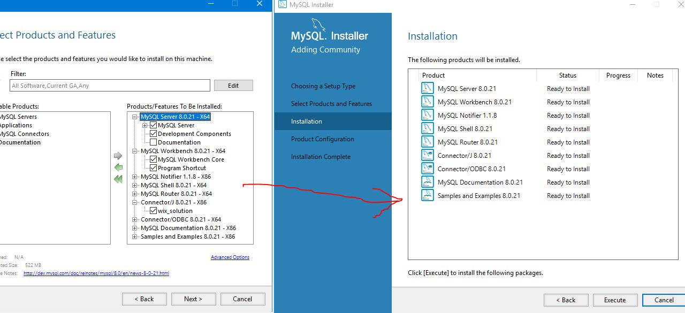 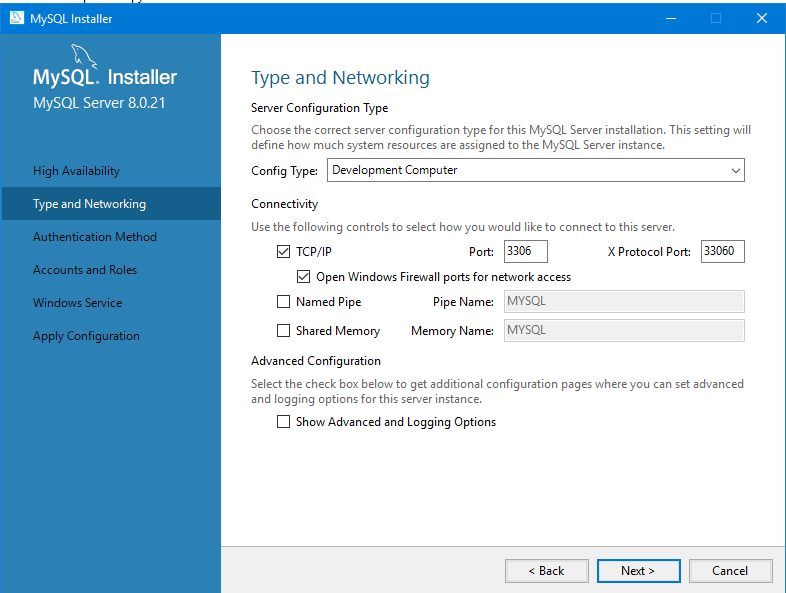 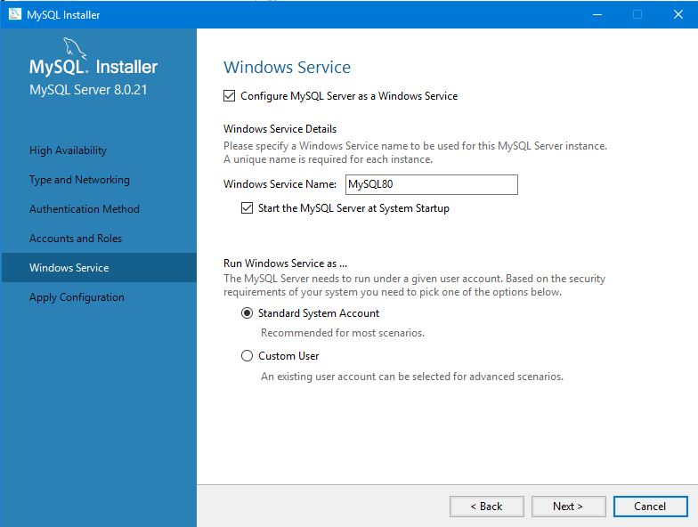 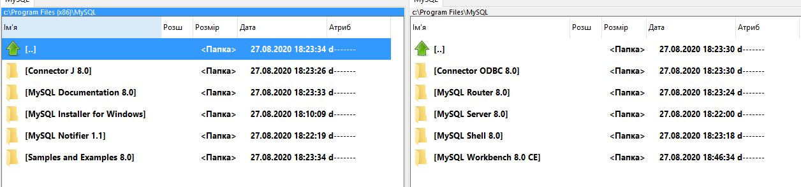
Важное содержимое папок для MySQL
[2020] С:/Program Files (x86)/MySQL/Connector J 8.0/mysql-connector-java-8.0.21.jar (файлы внутри: Driver.java, FabricMySQLDriver.java)
[2015] C:/Program Files/MySQL/Connector.J 5.1/src/com/mysql/jdbc/Driver.java
***
1) MySQL 8.0 Command Line Client - Unicode - Важно: использовать терминал именно с Unicode(есть 2-й без)
2) MySQL Installer - Community - менеджер установок новых компонентов и updates
3) MySQL Workbench 8.0 CE - для создания и редактирования БД
4) MySQL Notifier 1.1 - для управления работой серевра MySQL
5) Connector J 8.0 - коннектор для связи MySQL с Java IDE (файл внутри: mysql-connector-java-8.0.21.jar)
from YOS:Развернул mariadb+nginx+php-fpm в докере, как микросервисы. Создало волюмы там где я захотел. Могу скинуть готовый docker-compose, и только подкинь сайт в нужную папку если не хочешь сам сайт контейнерезировать
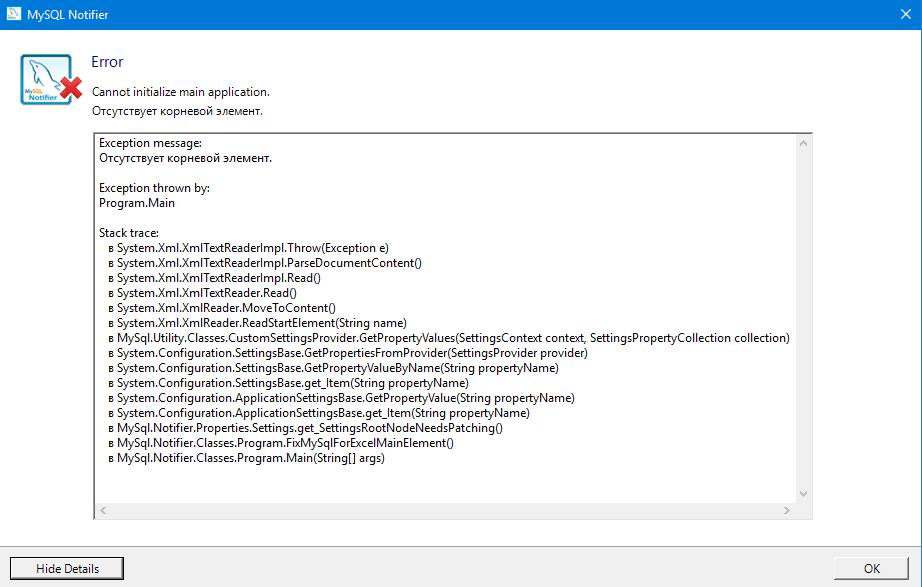
Решение: удалил
C:\Users\Kiranatos\AppData\Roaming\Oracle\MySQL Notifier\settings.config
(При следующем запуске - оно создаст новый)
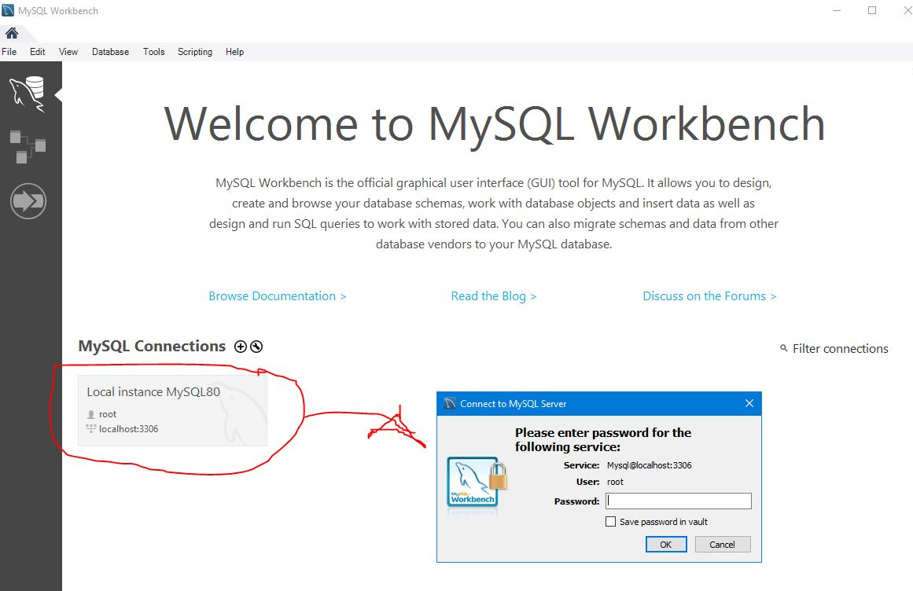
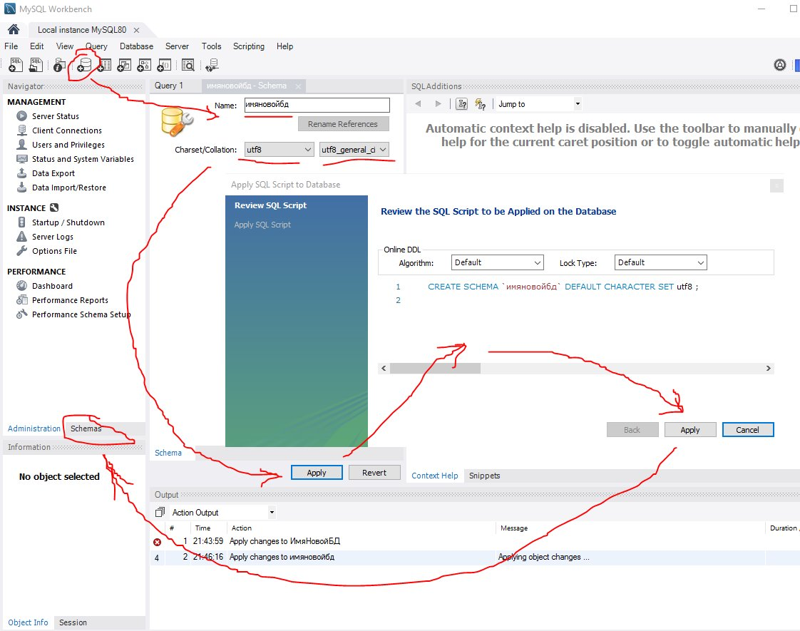
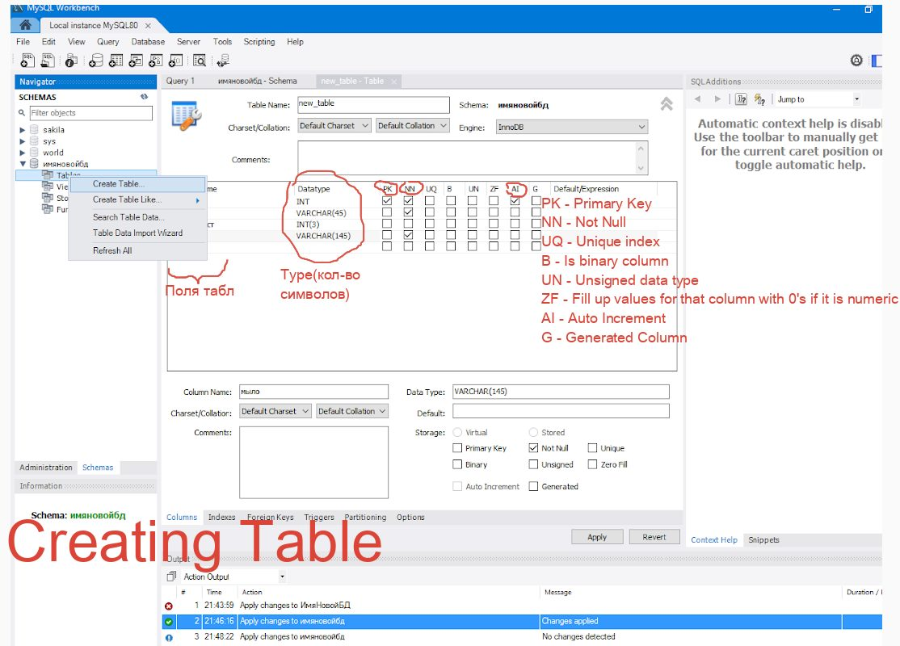
PK - Primary Key
NN - Not Null
UQ - Unique index
B - Is binary column
UN - Unsigned data type
ZF - Fill up values for that column with 0's if it is numeric
AI - Auto Increment
G - Generated Column
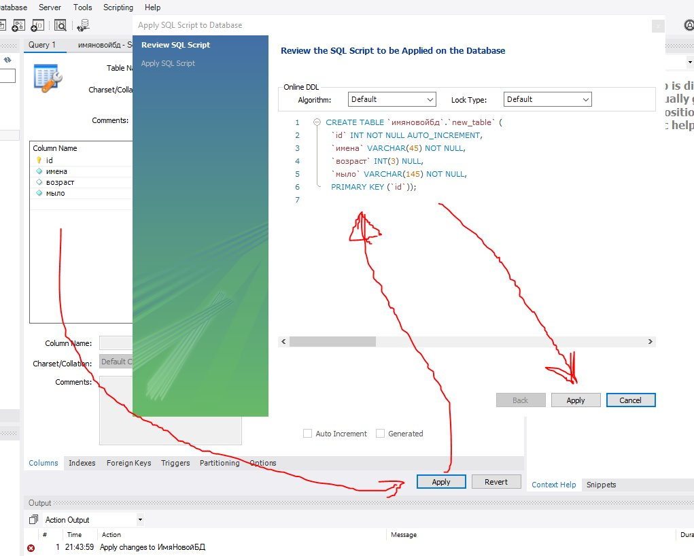
Сгенерированный код, по добавленных вручную ячейках.
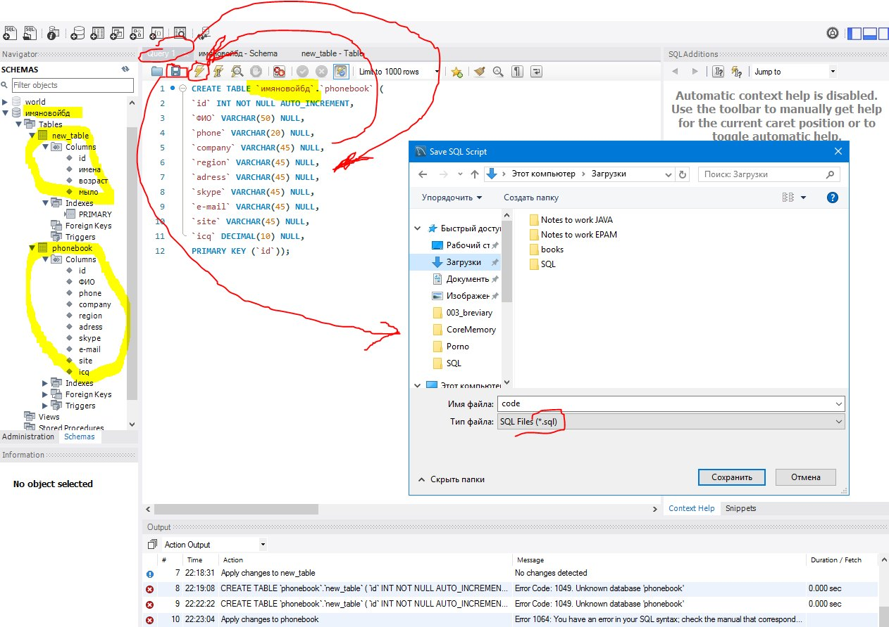Во вкладке Query можно написать код и execute его. Также потом код можно сохранить.
CREATE TABLE `имяновойбд`.`phonebook` (
`id` INT NOT NULL AUTO_INCREMENT,
`ФИО` VARCHAR(50) NULL,
`phone` VARCHAR(20) NULL,
`company` VARCHAR(45) NULL,
`region` VARCHAR(45) NULL,
`adress` VARCHAR(45) NULL,
`skype` VARCHAR(45) NULL,
`e-mail` VARCHAR(45) NULL,
`site` VARCHAR(45) NULL,
`icq` DECIMAL(10) NULL,
PRIMARY KEY (`id`));
Переименовать таблицу: ALTER TABLE `имяновойбд`.`phonebook` COLLATE = utf8_general_ci , RENAME TO `имяновойбд`.`newphonebook` ;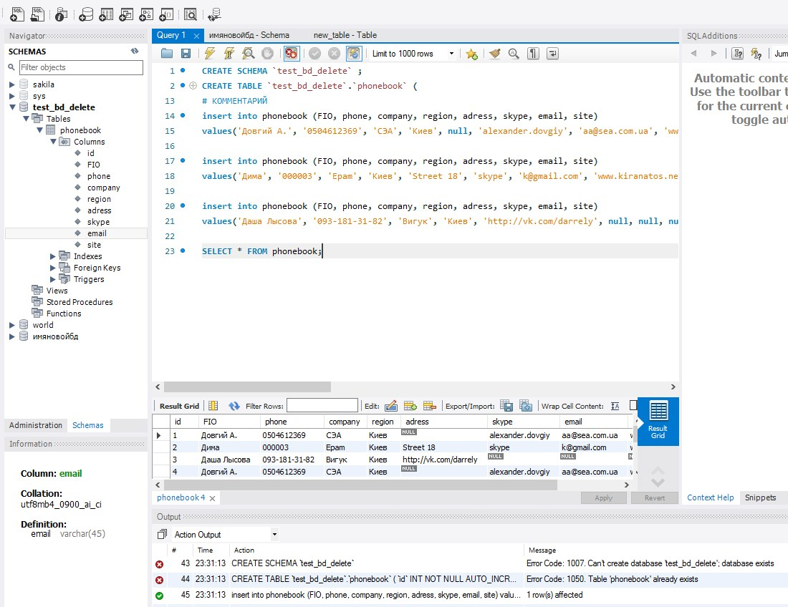
14-21) Вставка строк информации
23) Выборка нужной информации из таблицы
CREATE SCHEMA `test_bd_delete` ;
CREATE TABLE `test_bd_delete`.`phonebook` (
`id` INT NOT NULL AUTO_INCREMENT,
`FIO` VARCHAR(50) NULL,
`phone` VARCHAR(20) NULL,
`company` VARCHAR(45) NULL,
`region` VARCHAR(45) NULL,
`adress` VARCHAR(45) NULL,
`skype` VARCHAR(45) NULL,
`email` VARCHAR(45) NULL,
`site` VARCHAR(45) NULL,
PRIMARY KEY (`id`));
# КОММЕНТАРИЙ
insert into phonebook (FIO, phone, company, region, adress, skype, email, site)
values('Довгий А.', '0504612369', 'СЭА', 'Киев', null, 'alexander.dovgiy', 'aa@sea.com.ua', 'www.sea.com.ua');
insert into phonebook (FIO, phone, company, region, adress, skype, email, site)
values('Дима', '000003', 'Epam', 'Киев', 'Street 18', 'skype', 'k@gmail.com', 'www.kiranatos.net');
insert into phonebook (FIO, phone, company, region, adress, skype, email, site)
values('Даша Лысова', '093-181-31-82', 'Вигук', 'Киев', 'http://vk.com/darrely', null, null, null);
SELECT * FROM phonebook;
Подсказка ошибок хреновая, не как в джаве. Если подчеркнуло красным - еще не факт, что в этом месте ошибка. Может быть в любом другом месте, далее по тексту. Как пример: использование киррилицы в названии колонок - возможно создать, но ошибки при reference к ним.
***
Двойной клик на ДБ сделает её текущей.
**